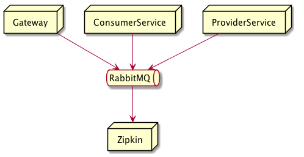
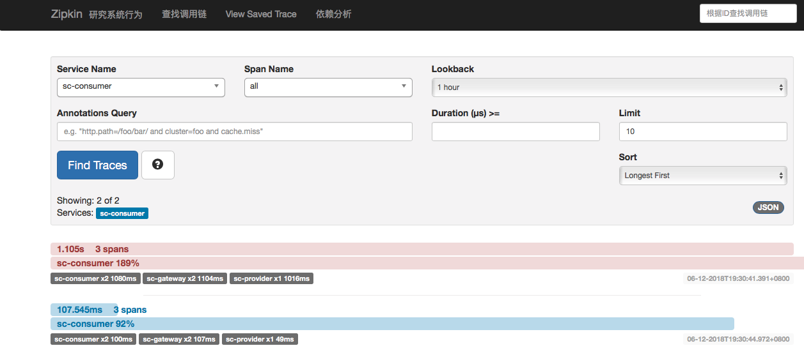

Spring Cloud 上手9-服务监控
文章目录
这是Spring Cloud上手系列的第九篇，代码放在GitHub上，随着本系列文章更新。
Spring Cloud Sleuth
在Spring Cloud应用中，各服务之间存在复杂的调用关系链。Spring Cloud Sleuth主要的功能就是提供服务调用链追踪功能。
例如，访问gateway的/api/consumer/hello端点时，会调用consumer:service的/consumer/hello端点，之后调用provider:service的/provider/hello端点。在大型系统中，这种调用关系可能会非常复杂，因此需要有机制能对整个调用链进行追踪。
较早提供这种追踪组件的是Google的Dapper链路跟踪组件，于2010年发表了相关论文，相关的文章是实现链路追踪的理论基础。目前，除Dapper外，还有Twitter和Zipkin，阿里的Eagleeye等。
Spring Cloud Sleuth中能方便的集成Zipkin。
相关术语
Spring Cloud Sleuth使用的是Google Dapper的术语。
-
Span: 基本工作单元，发送一个远程调用就会产生一个Span，Span用64位ID唯一标识。
-
Trace: 由一系列Span组成的树状结构。调用一个服务接口时，由这次调用所产生的后续调用都会生成一个新的Span，由所有这些Span组成一个Trace。
-
Annotation: 用来记录事件，有一些核心注解来定义请求的开始和结束。这些注解包括：
-
cs: Client Sent客户端发送请求，表示Span的开始
-
sr: Server Received 服务端获取请求准备开始处理，
sr-cs得到的就是网络传输时间 -
ss: Server Sent请求处理的完成时间，
ss-sr就是服务器的处理时间 -
cr: Client Received客户端接收响应的时间，
cr-cs就是客户端整个请求调用所消耗的时间
-

集成Zipkin
集成Zipkin的工作主要有：
-
添加
zipkin应用，它主要用作ZipkinServer收集调用链数据，并且提供展示。 -
将
gateway、provider:service和consumer:service集成zipkin客户端。 -
通过
gateway访问/api/consumer/hello时，ZpkinServer就能收集到数据。
客户端与Zipkin的集成方式主要有两种，一种是通过Http POST数据至Zipkin Server，另一种是通过RabbitMQ接收消息。
网上很多文章都是以Http POST方式通讯的，有一些虽然是通过RabbitMQ，但是却不是针对Edgware版的，很有可能在Edgware版上无法配置成功。这是因为Edgware之前的版本中，需要整合spring-cloud-sleuth-stream，而在Edgware版本中使用的是Zipkin 2.X，它本身就已经支持消息队列，因此spring-cloud-sleuth-stream将被废弃。
另外，在Spring Cloud F版中，Zipkin的工作方式仍会有变化。因为新版本的Zipkin在向独立中间件转变，它会转变成像RabbitMQ这样的独立服务。今后，集成起来将会更简单。
本文不再缀述Http POST方式进行数据传输，只记录如何使用RabbitMQ与Zipkin进行通讯。

配置依赖
在根模块的build.gradle中ext.libs中添加zipkin相关依赖：
|
|
添加Zipkin 服务模块
在根模块下添加zipkin模块，并将它添加至settings.gradle:
|
|
在zipkin模块的build.gradle中添加依赖，并设置Main-Class:
|
|
主类代码如下：
|
|
在zipkin应用的application.yml中配置队列相关信息:
|
|
这里指定了zipkin服务使用的队列名称为zipkin，后面zipkin客户端程序中的队列名称需要配置成同样的值。
配置Zipkin 客户端工程
为获取上面图中gateway-consumer-provider的调用链信息，我们需要将gateway、consumer:service和provider:service这几个模块配置为zipkin客户端。
为减少配置量，我们把客户端工程的依赖放在根模块的build.gradle中，在subprojects段中设置以下依赖：
|
|
然后，在这几个客户端工程的application.yml或bootstrap.yml中添加zipkin相关配置：
|
|
这里的spring.sleuth.sampler.percentage是指100%的将链接数据传输给Zipkin服务端，默认值为0.1。这里为了便于查看，我们把它配置为1。实际生产环境上，可以从1开始逐渐的降低。queue属性的值需要与服务端配置的队列名称保持一致。
测试
为了进行集成测试，我们需要启动registry、gateway、provider:service、consumer:service模块外，还需要启动rabbitmq。另外，由于此前配置中心一文中provider:service启动时依赖于config模块，因此我们还需要启动config模块。
启动完毕后，在Rabbit控制台，能看到新创建的zipkin队列。

访问http://localhost:9003能看到zipkin服务程序的控制台。
访问http://localhost:9000/api/consumer/hello?name=Jamsa111之后，再查看zipkin控制台，就能看到调用链信息和依赖分析信息了。

文章作者 Jamsa
上次更新 2018-06-12